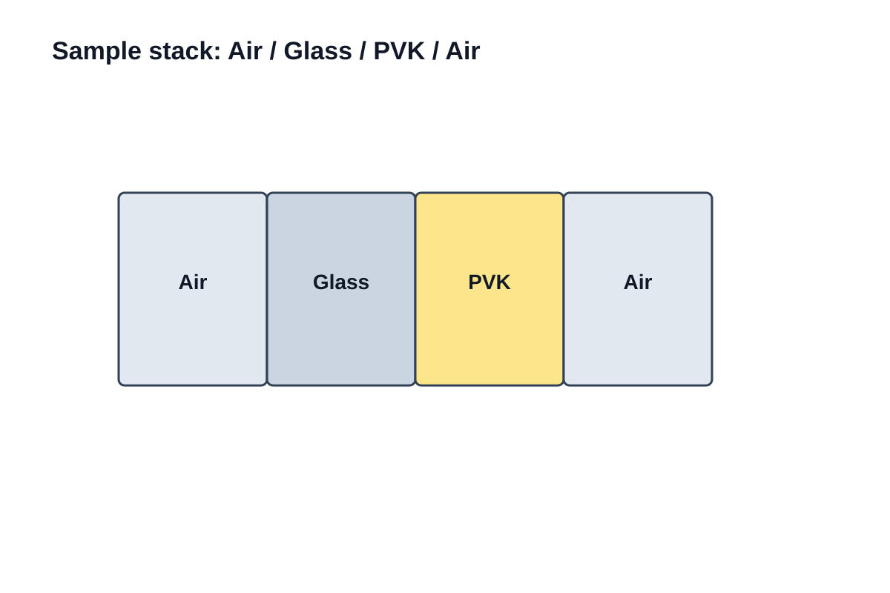
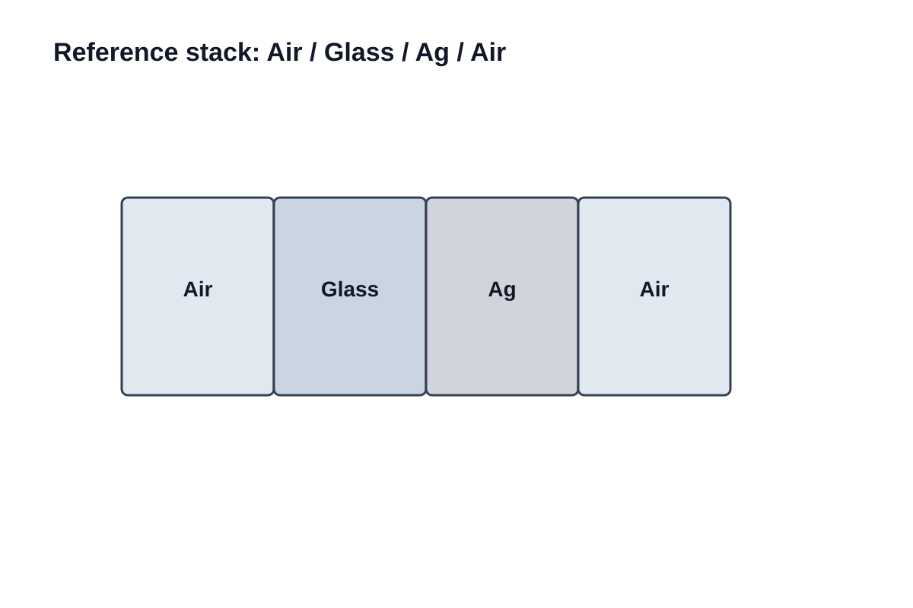
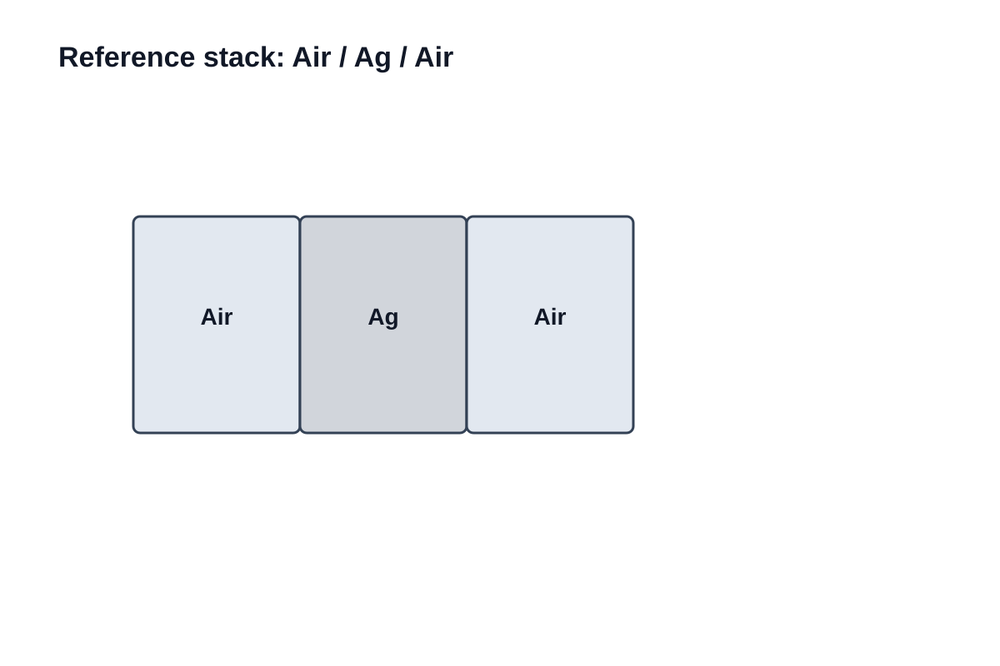

原始光谱和参比对象




glass/PVK：样品光谱glass/Ag：同光路参比Ag mirror + bk：直接银镜参比；第 1 帧过曝，后 99 帧可用
600 nm 单点 trace：从 counts 到 R_exp

R_exp by glass/Ag
0.290941
0.290941
R_exp by Ag mirror
0.263950
0.263950
600 nm 单点 trace：从 Fresnel / TMM 到 R_TMM
R_TMM GlassPVK fixed
0.128762
0.128762
R_TMM GlassAg
0.983494
0.983494
R_TMM AgMirror
0.988237
0.988237
实验 vs TMM 曲线对比

主图只看 500–750 nm；实验两条链与 TMM fixed / bestD 颜色和线型保持一致。
残差与核心矛盾

- 600 nm residual by glass/Ag:
0.162179 - 600 nm residual by Ag mirror:
0.135188 - best d from manifest:
458 nm
核心矛盾不是公式不自洽，而是实验反射率显著高于理论值。